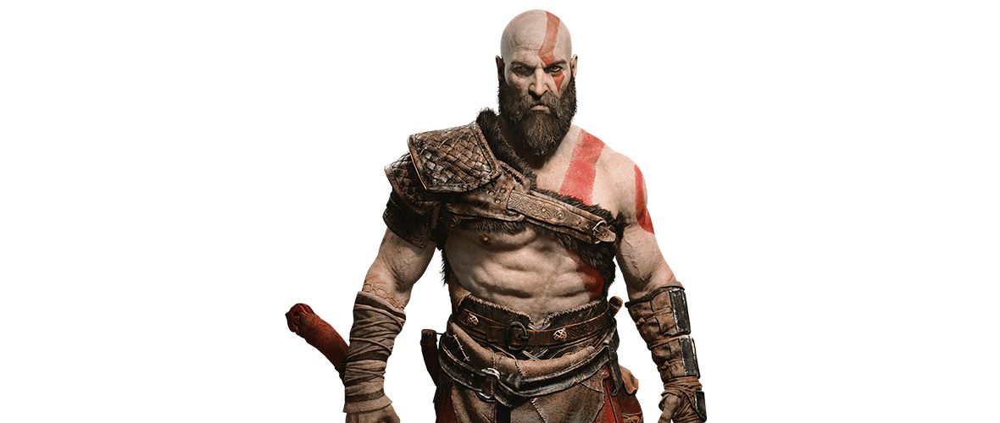
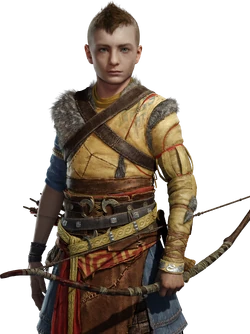
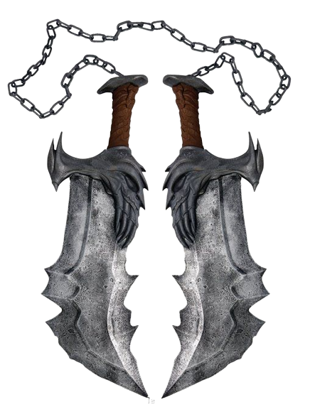
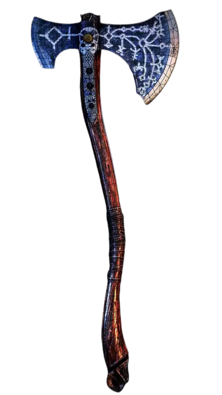
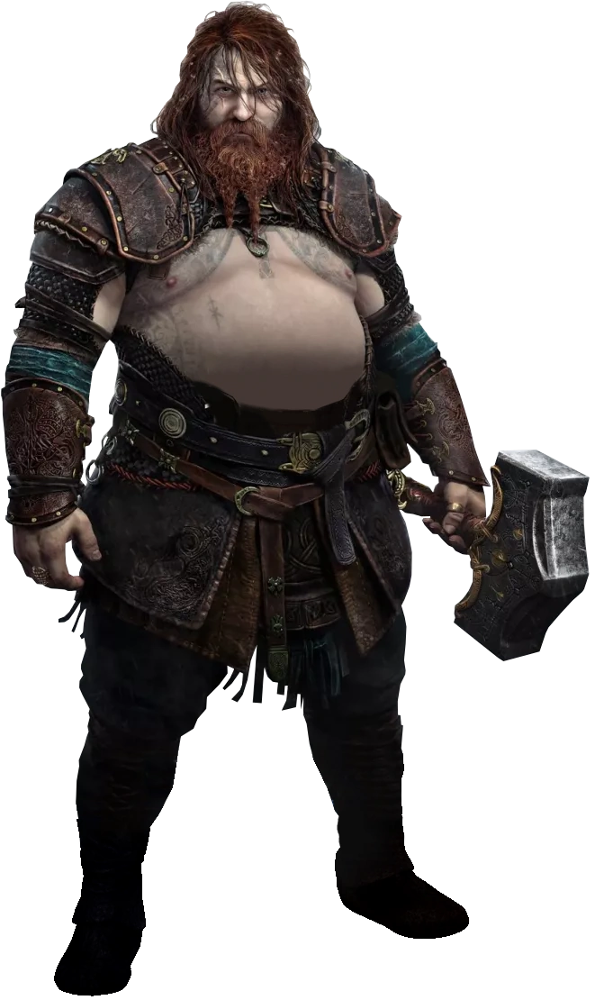
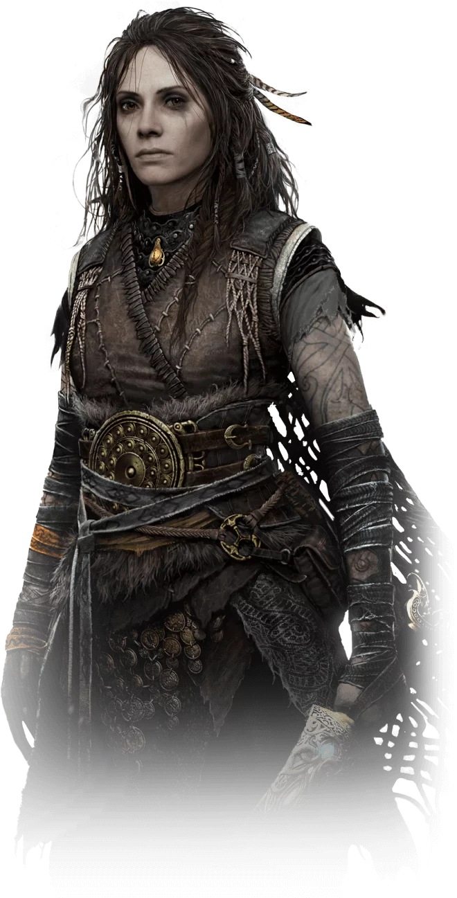

Characters
Kratos
Kratos is the protagonist of the God of War series. The character is a power-hungry Spartan who, to save his life, was eventually forced to serve the Olympian god Ares. During one murderous rampage, Kratos accidentally killed his wife and child. Kratos renounced Ares, became a tormented soul (including imprisonment by the Furies), and served the gods for ten years in hopes of becoming free of the nightmares. He eventually killed Ares and became the God of War, but was betrayed by his father, Zeus. A series of attempts to free himself from the influence of the gods and Titans followed, culminating in a final confrontation with Zeus, ending in the god's death and the reign of the Olympian Gods. In the aftermath, Athena appeared and Kratos sacrificed himself to prevent her from becoming the supreme goddess of the world.[27] Many years later, surviving his fatal sacrifice, Kratos now lives in the world of the Norse gods in Midgard where he now has a son named Atreus. Following the death of his second wife Faye, he and Atreus journey to the highest peak of the nine realms to fulfill her promise and spread her ashes there.

Atreus
Atreus was conceived between the Greek demigod-turned-God of War, Kratos and a Jötunn named Laufey, whom he called Faye. He was a sickly child and only recently grew healthy enough to travel. Not much is known about his past other than the fact Kratos was rarely home because he was practicing control over his rage, which Atreus misinterprets as hunting. Faye had passed away sometime later, although the causes are still unknown. Loki is the wily trickster of Norse mythology. His father is the Jötunn giant Farbauti and his mother is Laufey. He is brother to Helbindi and Býleistr . With the giantess Angrboða, Loki is the father of Hel, Jörmungandr, and Fenrir. Very little is known about Loki's family and background before he came to reside in Asgard with the Aesir.

Weapons
The Blades Of Chaos
The Blades of Chaos are a pair of chained blades that were fashioned by the God of War, Ares. Ares had the blades made for a servant who would prove worthy of being in his service. The blades were the first pair of chained blades that Kratos used in the God of War Series.The Blades of Chaos were forged at the darkest depths of the Underworld by Ares himself. They were imbued with fire, which allowed them to ignite with every attack that the user performed. The Blades' chains would stretch out for a set distance with each attack, allowing for fluid movement no matter who wielded them. The chains of the blades were permanently seared onto the forearms of the wielder, which served as a reminder of their oath to the God of War, and could only be removed either by the God of War himself or when the wielder's time of servitude ended. However, when their creator is dead with the servant still owning them, they can be removed or equipped, whenever needed.

The Leviathan
The Leviathan Axe is a two-handed war axe that is Kratos' main offensive weapon in God of War and in God of War Ragnarök.It was forged by the Huldra Brothers, Sindri and Brok, who also forged Thor's hammer, Mjölnir, after feeling responsible for the destruction brought about by Thor. As a weapon made to oppose the power of Mjölnir and inspired by the epic size of Jörmungandr, Brok suggests the axe be named Leviathan.[1] According to Sindri when first meeting him, the weapon was infused with the echoing screams of twenty frost trolls (give or take) and it was made for and given to Laufey who passed it on to her husband Kratos, before her death.The axe has several runes inscribed on the blade that grants it different powers, among them the use of ice, and the ability to recall the weapon from any distance. It also has two slots for Runic Attacks to be placed in, a heavy and light attack for each slot. The Axe Pommel is customizable with pommels found throughout the Realms or bought from Brok and Sindri.During Kratos' journey to spread Faye's ashes, he encounters Brok and Sindri, who each upgrade the axe, improving its magic and attack strength. Upon bringing one of the brothers a Frozen Flame, the axe can be further upgraded, increasing the size of the blade and adding ornate gold to the blade and handle.

Enemies
THOR
Thor (Old Norse: Þórr) is the Norse Aesir God of thunder, lightning, storms, and strength. He is the son of Odin and Fjörgyn, husband of Sif, half-brother of Týr, Heimdall, and Baldur. The father of Magni, Modi, Thrúd, step-father of Ullr and uncle of Forseti.Thor appears in the true ending of God of War (2018), and returns as the secondary antagonist of God of War: Ragnarök.In Norse mythology, Thor is an Aesir God associated with thunder, lightning, storms, oak trees, strength, the protection of mankind, and also hallowing and fertility. Thor is described as a fierce, red-haired and bearded God who carries a menagerie of magical weapons, from a pair of magical gauntlets to a belt of strength. However, his most notable weapon is the hammer Mjölnir, which is powerful enough to level mountains.

Freya
Freya, also known as the Witch of the Woods and Frigg, is a supporting character in God of War (2018). She is a Vanir goddess who helps Kratos and Atreus on their journey.She is the daughter of Njörd, an ex-wife of Odin, the estranged mother of Baldur, the sister of Freyr, grandmother of Forseti, and the former Queen of the Valkyries before Sigrún.Freya returns as the tetartagonist of God of War: Ragnarök, attempting to seek revenge against Kratos for killing Baldur, but later forgives him.Freya's boar Hildisvini was once a man named Ottar who has a close bond with her. Ottar wanted to learn more about his family but he needed a disguise so Freya turned him into a boar named Hildisvini. Together they went to meet with Hyndla the giant seer to find out about his past.
